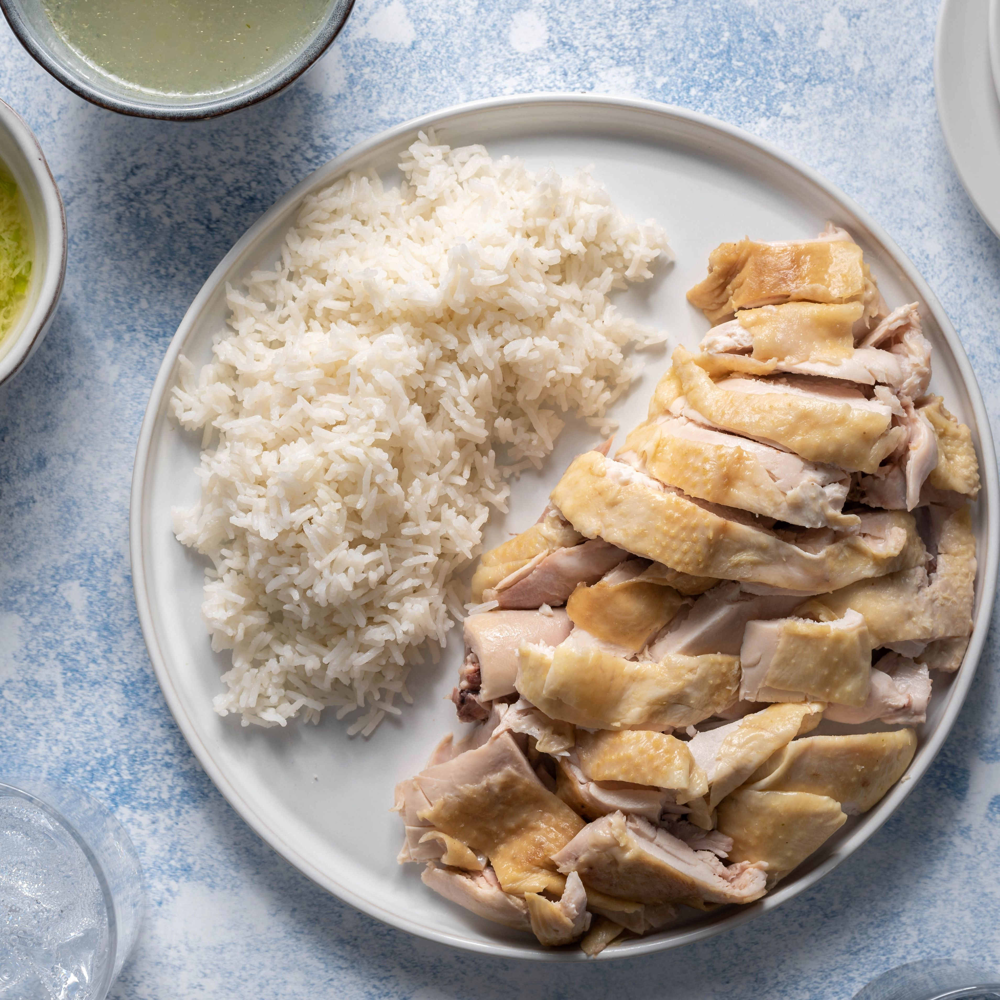

Chicken and Rice

Description
Chicken and rice is a simple, versatile and healthy dish that I always
keep on hand for lunches.
Ingredients
- Chicken breast
- Jasmine rice
- Sauerkraut
- Barbeque sauce
- Cajun seasoning
Steps
- Rinse rice thrice and cook in rice cooker with salted water.
- Rub down the breasts with oil of your choice and air fry at 350 degrees for 15 minutes.
- Flip chicken breasts and cook for ~5 more minutes, remove when it registers 165 degrees.
- Let chicken rest before cutting and serving over rice with a spoonful of sauerkraut and barbeque sauce.